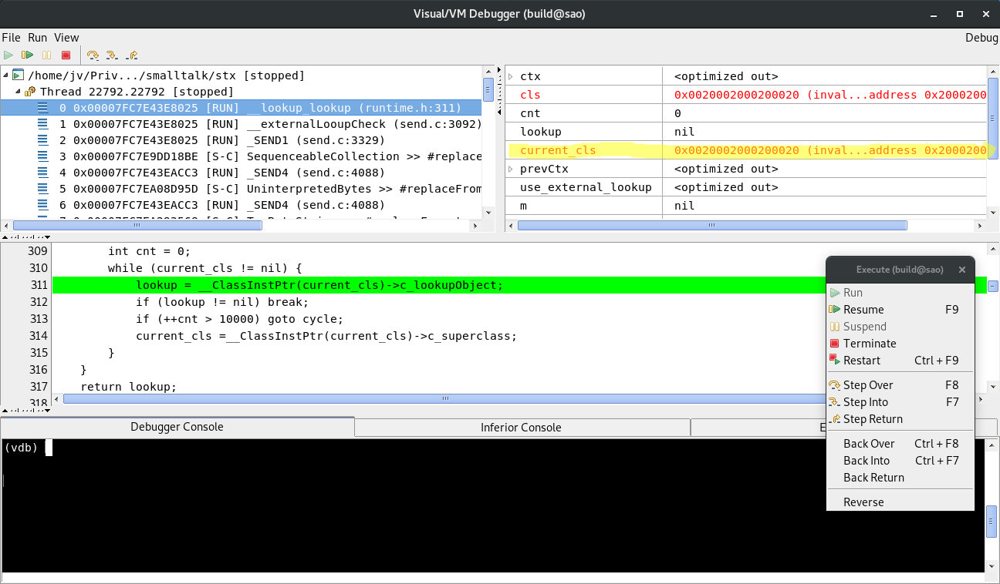
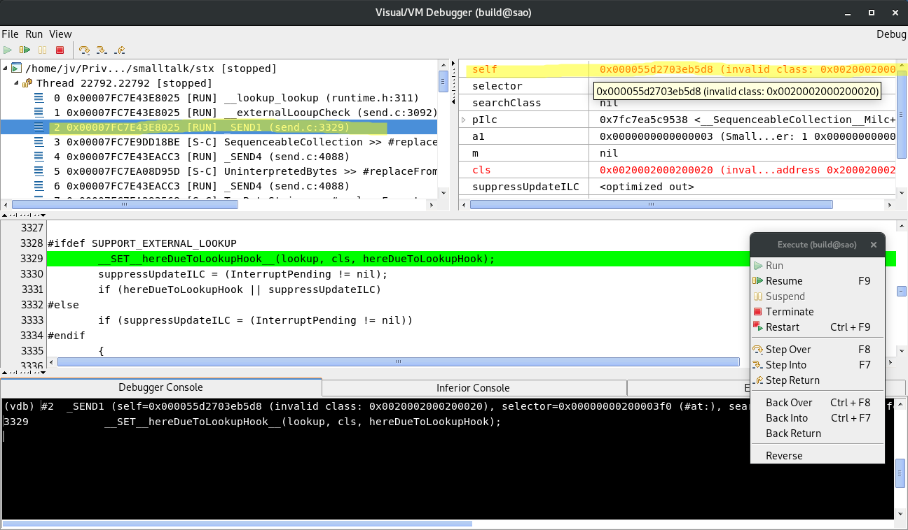
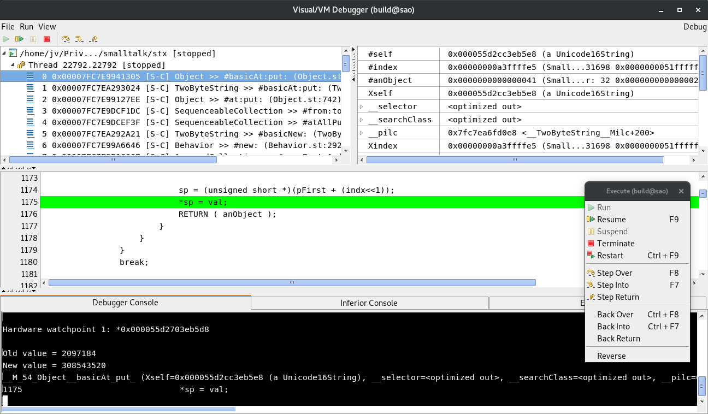

Introduction
This year on ESUG 2018 conference in Cagliary, Sardinia, I gave a talk showing how to debug a faulty smalltalk runtime using GNU debugger, Mozilla rr and Visual / VM Debugger I have shown how I have debugged a real bug found in Smalltalk/X - issue #200.
Following post is pretty much the ESUG 2018 talk in a form of an article. And, by the way, the conference was great and with some very interesting talks.
For those who want to try it all themselves
If you want to try all what will follow yourself, you need to get few things ready.
-
First, you need a Linux system on x86_64 CPU. I use Debian but any reasonably modern Linux distro.
-
Then you need to build your own Smalltalk/X to exhibit the problem, since it has been long time fixed. To build Smalltalk/X, follow build instructions. However, after
rake checkoutand before commencingrake compile, you need to revert revert commit 574962856f04pushd build/stx/libbasic hg backout –no-commit 574962856f04
popd -
To get all features of Visual / VM Debugger (VDB for short), you’d also need to build most recent GNU Debugger (GDB for short) from master branch. Once built, configure VDB to use it:
mkdir -p ~/.smalltalk echo “UserPreferences current vdbGdbExecutable:’/path/to/built/gdb/gdb’.” » ~/.smalltalk/settings.stx
-
Finally, you would need rr. The easiest is to install it using package manager, e.g.:
apt-get install rr
Preparation
The very first step - and the most tricky if you ask me - is to prepare a
reproducible and minimal test case. In this case the bug report contains such
a test case, so all we need to do is copy-paste-hack it into .st file so
we can easily run our test case from a command line. So an issue_200.st would
be like:
| t |
t := Unicode16String new: 46.
[
1 to: 30 do:[:i |
Stderr nextPutLine: i printString , ' - ', (t size*2) printString.
Stderr flush.
t := t , t.
]
] on: Error do:[:ex |
Stdout nextPutLine: ex description.
Smalltalk exit: 1.
].
Stdout nextPutLine: 'Passed'.
Smalltalk exit:0"
Now let’s run the code above - if there’s a problem, it should crash:
cd build\projects\smalltalk
./smalltalk --record --abortOnSIGSEGV --execute issue_200.st
The --execute tells Smalltalk/X to run the code in given file. The --abortOnSIGSEGV
tells the VM to abort() when segmentation violation. Normally, the VM just raises
a smalltalk exception and lets smalltalk code to handle it. Finally, --record
tells the launcher script to record and save whole execution (including the crash) so
we can later use this record for debugging purposes.
The output should look something like:
rr: Saving execution to trace directory `/home/jv/.local/share/rr/stx-33'.
1 - 92
2 - 184
3 - 368
4 - 736
5 - 1472
6 - 2944
7 - 5888
8 - 11776
9 - 23552
10 - 47104
11 - 94208
12 - 188416
13 - 376832
14 - 753664
15 - 1507328
16 - 3014656
17 - 6029312
18 - 12058624
19 - 24117248
20 - 48234496
21 - 96468992
22 - 192937984
23 - 385875968
24 - 771751936
25 - 1543503872
VM [sigsegv]: sigNo 11
VM [error] (18-08-04 13:11:45): sigsegv
new: 7f7d47a55000 .. 7f7d47c55000 old: 55d85d667000 .. 55d9cf44f000
surv: 7f7d47c57000 .. 7f7d47c57000 .. 7f7d47e57000
VM [error] (18-08-04 13:11:45): in process 5
last selector: replaceFrom:to:with:startingAt:
last class: ArrayedCollection
sigsegv 4631
sigsegv 4639
os signal interrupt
Debugging
Once we have recorded the crash, we’re ready for debugging. So, start a “Visual / VM Debugger” (VDB for short) and connect to a replay server. Smalltalk/X launcher script can automate all this so it’s as easy as:
./smalltalk --replay --vdb
The --replay options tell the launcher script to replay last
recorded execution, --vdb opens VDB and connects it to replay server.
Not the (simulated) execution state is at process entry point (even
before main() is executed).
Let just run it so we can see where it crashed. That’d be a good starting point
anyway. So issue a c CLI command or use menu Run / Resume (or press F9,
whatever you prefer). This would take a while but then it finally crashes:

Here’s an excerpt from stack trace (from the screenshot):
/home/jv/Priv.../smalltalk/stx [stopped]
Thread 15903.15903 [stopped]
0 0x00007FD44066D025 [RUN] __lookup_lookup (runtime.h:311)
1 0x00007FD44066D025 [RUN] __externalLooupCheck (send.c:3092)
2 0x00007FD44066D025 [RUN] _SEND1 (send.c:3329)
3 0x00007FD44605997E [S-C] SequenceableCollection >> #replaceFrom:to:with:startingAt: (SequenceableCollection.st:6587)
…and from the source (from the screenshot)…
...
if (lookup == nil) {
int cnt = 0;
while (current_cls != nil) {
> lookup = __ClassInstPtr(current_cls)->c_lookupObject;
if (lookup != nil) break;
if (++cnt > 10000) goto cycle;
current_cls =__ClassInstPtr(current_cls)->c_superclass;
}
}
...
Now lets talk about what we see:
The __lookup_lookup() (see above stack trace) is an internal VM routine
that looks up a lookup object. This object is used to lookup a method to execute.
Sounds complicated but for now it does not matter much what it does.
If you’re interested, you may find details in 2. The important thing
is that it crashes when dereferencing current_cls. If you look at
variables (top-right pane in VDB window), you can immediately see that
current_cls is somewhat wrong:
current_cls '0x0020002000200020 (invalid object: MemoryError: Cannot access memory at address 0x20002000200020)'
If you look closer at the object reference value, you see it’s quite funny.
Let’s walk down the stack to see from where this funny value came from.
Frame 2 __SEND1() is the place to look. When you select the frame in VDB
window, again you immediately see that value of self is somewhat wrong:

To stress the fact that something is wrong with the value of self, VDB shows it in red.
See the value of a class? (TODO: Add screenshot)
The self reference itself is kind of OK. I mean it points to an object in object heap,
but its class is wrong. From the looks of it something is overwriting the contents of the
object (self) with some nonsense.
Now comes the interesting part. The memory has already been overwritten, possibly many many cycles in the past, so how to find out what code exactly overwrites it? This is where all the recording and replaying becomes invaluable. The replay server allows one to go backward in time.
So, we set up a watchpoint on selfs class slot. In Smalltalk/X, object’s class
is stored in first word of the object header. You can have a look in stc.h to
see the C definition or, easier, use ptype 3 command:
(vdb) ptype selftype = struct __instance {
OBJ o_class;
unsigned int o_size;
unsigned char o_space;
char o_flags;
unsigned char o_age;
unsigned char o_hashLow;
OBJ i_instvars[1];
} *
To set the watchpoint:
(vdb) p self
$2 = 0x0000564ff0482260 (invalid class: 0x0020002000200020)
(vdb) watch *0x0000564ff0482260
Hardware watchpoint 1: *0x0000564ff0482260
We must use raw object reference value rather than symbolic one (like watch &(self->o_class)) because the watchpoint would become invalid as soon as
execution leaves _SEND4() since self is defined only in its scope.
Now we just let the program to run in “reverse”. We are going back in time until the
watchpoint hits and then check why it hit. Use reverse-continue command 4
or use menu Run -> Reverse.
In this case, this will take a long time (mainly due to the large heap).
Eventually, the watchpoint will hit in Object >> #basicAt:put:

Again an excerpt from the stack trace:
/home/jv/Priv.../smalltalk/stx [stopped]
Thread 15903.15903 [stopped]
0 0x00007FD445BC82F5 [S-C] Object >> #basicAt:put: (Object.st:1175)
1 0x00007FD44651B0E4 [S-C] TwoByteString >> #basicAt:put: (TwoByteString.st:108)
2 0x00007FD445B997DE [S-C] Object >> #at:put: (Object.st:742)
3 0x00007FD44605729C [S-C] SequenceableCollection >> #from:to:put: (SequenceableCollection.st:6140)
4 0x00007FD446056FFF [S-C] SequenceableCollection >> #atAllPut: (SequenceableCollection.st:6114)
5 0x00007FD44651AAE1 [S-C] TwoByteString >> #basicNew: (TwoByteString.st:72)
6 0x00007FD445C2D636 [S-C] Behavior >> #new: (Behavior.st:2929)
7 0x00007FD4460A4727 [S-C] ArrayedCollection >> #copyEmptyAndGrow: (ArrayedCollection.st:391)
8 0x00007FD446042BB8 [S-C] SequenceableCollection >> #, (SequenceableCollection.st:3712)
9 0x00007FD446374686 [S-C] CharacterArray >> #, (CharacterArray.st:4114)
...
…and from the source:
...
if (__isSmallInteger(anObject)) {
val = __intVal(anObject);
if ((unsigned)val <= 0xFFFF) {
if ((unsigned)indx < (nbytes>>1)) {
unsigned short *sp;
sp = (unsigned short *)(pFirst + (indx<<1));
> *sp = val;
RETURN ( anObject );
}
}
}
break;
...
The code above is little tricky and needs an explanation, at least what’s its intent. You may want to have a look at full source. Variable:
-
indxis “unboxed” value of argumentindex(given asSmallInteger, which is tagged), -
nbytesis number of bytes in variable part of the receiver (essentially, a size of an object in bytes minus size of an object header and named instance variables, if any) - and finally,
pFirstis a pointer of first indexed byte of the receiver (in this case, the receiver is an instance ofUnicode16StringsopFirstis a pointer to first character).
What the code above does is that after some type- and bound-checks it computes
the address (sp) where to store the value (val) and then stores it:
sp = (unsigned short *)(pFirst + (indx<<1));
*sp = val;
The code is hard to read, I admit. The pFirst is actually a char * so we have
to multiply the indx by 2 when using C pointer arithmetic. This is done
by left-shift by one (indx<<1) rather than more readable multiplication,
presumably because it was faster than multiplication in ancient time and
compilers were not smart enough to optimize this themselves.
Anyways, let’s see what has happened. The watchpoint stops right after memory is modified, so let’s see how the corrupt object looks like now:
(vdb) p (OBJ)0x0000564ff0482260
$6 = 0x0000564ff0482260 (invalid class: 0x0000564f926e0020)
As you may see, the class reference looks “nearly” all right, only lower 2
bytes are these funny 0020 (remember, at the time of crash, the value was
0x0020002000200020). So, let’s go backward once more (use reverse-continue
command or Reverse menu item). After a while, it hits again at the same place.
Let’s see the corrupt object:
p (OBJ)0x0000564ff0482260
$8 = 0x0000564ff0482260 (a Unicode16String)
Here we go! Now the object is all right (references Unicode16String).
So now we know that it is Object >> #basicAt:put: that smashes object’s class reference.
But why?
Let’s see what are the values of indx, pFirst and sp:
(vdb) p /x indx
$3 = 0x51fffff0
(vdb) p /x pFirst
$4 = 0x56504c482280
(vdb) p /x sp
$5 = 0x564ff0482260
As you can see, the index is rather big (nearly 2G). However, more interesting
fact is that sp is smaller than pFirst. This is clearly wrong - pFirst
is pointer to first indexed variable so sp cannot be smaller than that.
Looking at the code that computes sp, the problem is probably clear to every
C programmer:
sp = (unsigned short *)(pFirst + (indx<<1));
This is very likely an integer overflow. What is the type of indx?
(vdb) ptype indx
type = int
Oh, an int, a signed 32 bit integer. Since value of indx is little below
2G, indx<<1 would be negative:
(vdb) p indx << 1
$12 = -1543503904
Here we go! Job done.